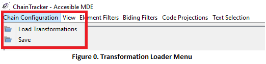
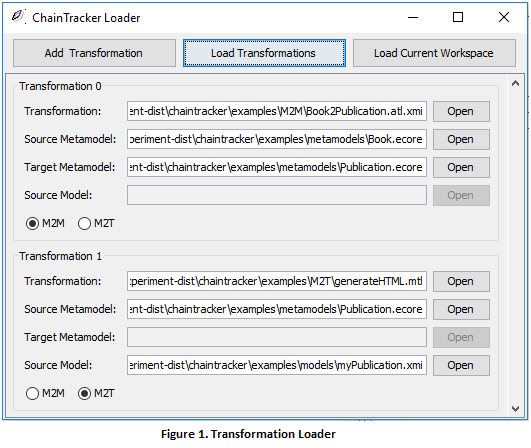
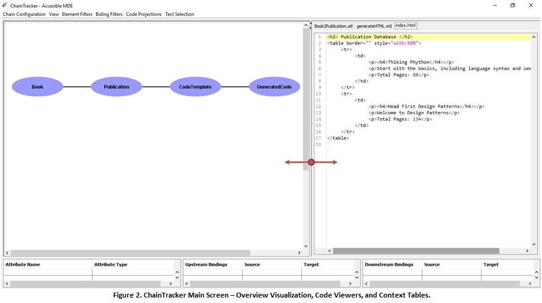
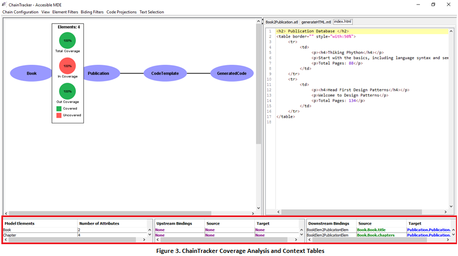

Welcome to ChainTracker
The goal of this tutorial is twofold. First, the tutorial enables the developers to explore the main functional components of ChainTracker, including the transformation visualizations and their semantics, the code projections, and the contextual information tables. Second, the tutorial guides developers through a simple pedagogical case study where they will be able to use the “filtering by element” and “filtering by binding” features in order to answer questions regarding the dependencies between the generation artefacts in a model-based code generator.
Model transformations can be used to tackle a wide rage of software engineering tasks. However, over the last 10 years model-based code generation has been the flagship software engineering paradigm backing the adoption of transformation technologies. This tutorial uses a simple model-based code generator to illustrate ChainTracker's features. It consists of one model-to-model and one model-to-text transformation that collaborate in order to transform the contents of a bookstore database into an anonymus publucation index. In turn the index is printed in an HTLM form.
Loading a Transformation in ChainTracker
1. In order to load a single transformation or a composition of transformations click on > Chain Configuration > Load Transformation Chain (Fig. 0). You will see the transformation loader window as presented below (Fig. 1). You can add as many transformations as you want, both model-to-model (M2M) and model-to-text (M2T) written in ATL and Acceleo are accepted by the tool. ChainTracker will automatically statically and dynamically analyze their dependencies.

1.1. To load the Book2Publication (M2M) and Publication2HTML (M2T) composition, click > Open, and locate each one of them in the folder > examples/m2m and examples/m2t respectively. You will also have to indicate the path of the source and target metamodels for all M2M transformations, and the source metamodel, and model instance for every M2T transformation.

The Overview Visualization
2. Once the transformations have been loaded, ChainTracker will present an “Overview” visualization of the composition, you can click on the edges and the nodes of the composition to obtain details about all the metamodels, transformations, and generated files that correspond to the workspace configured in Step 1 (Figure 2 – Left) .
Furthermore, the “Code Viewers” will automatically open all the textual files loaded in the configuration. This includes transformations (M2M and M2T) and generated files (Figure 2 – Right).
Finally, the “Context Tables” will be filled with information as you interact with the visualization. Tables summarize information about the metamodels and the bindings that are connected with their elements (Figure 2 – Bottom, Figure 3)

3. By clicking on the nodes of the visualization you can gain access to the coverage analysis of each metamodel. The information includes three main metrics.
- “In Coverage” reflects on the number of elements in a metamodel that are originated by a transformation in the transformation chain. In Book2Publication the Book metamodel is the root of the composition, hence all its elements are not originated by another transformation (100% uncovered). This allows developers to analyse metamodel elements which appearance is not derived from another metamodel.
- “Out Coverage” provides information about the number of elements in a metamodel that are used by a transformation. In this case, all the elements in the Book metamodel are used in the creation of the Publication metamodel (100% covered). This allows developers to study orphan metamodel elements that are not used and that perhaps need to be deleted.
- “Total Coverage” reflects on the percentage of elements that are neither created nor used by transformations.
